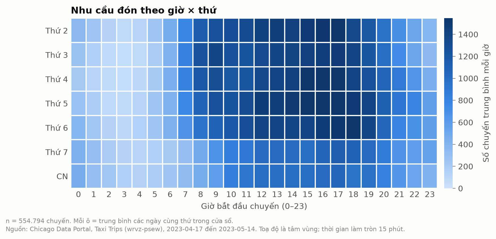
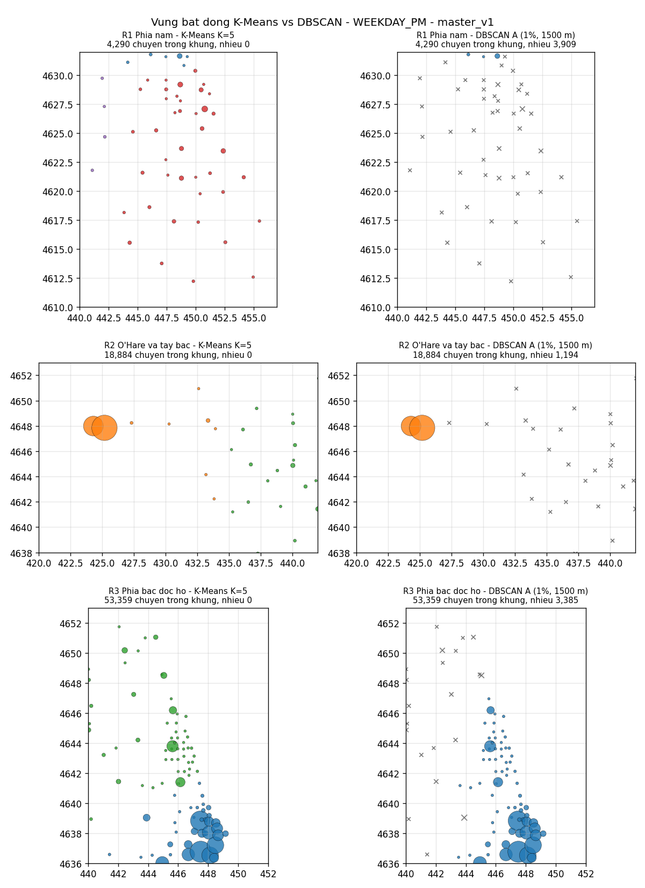
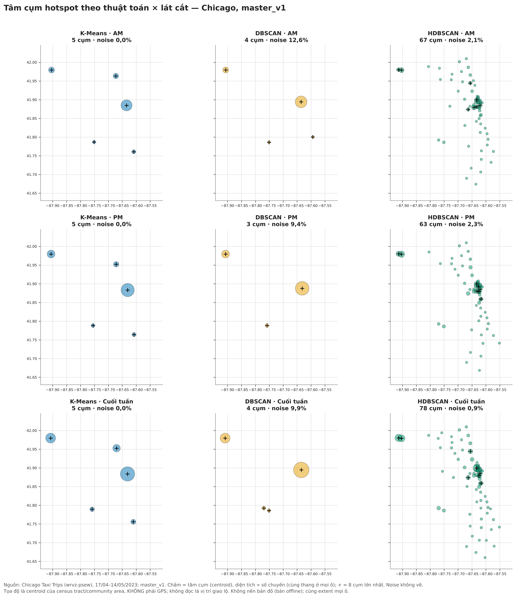
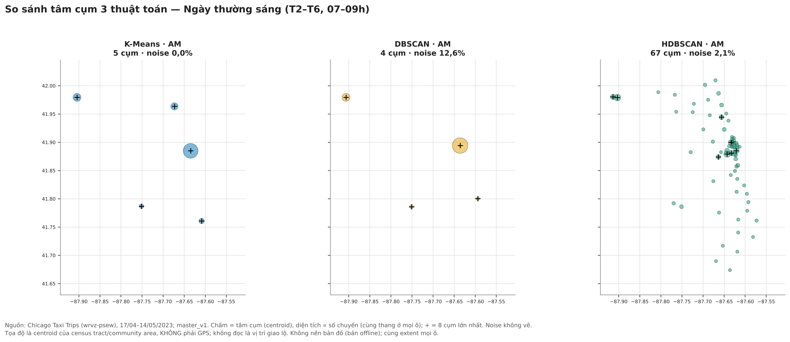
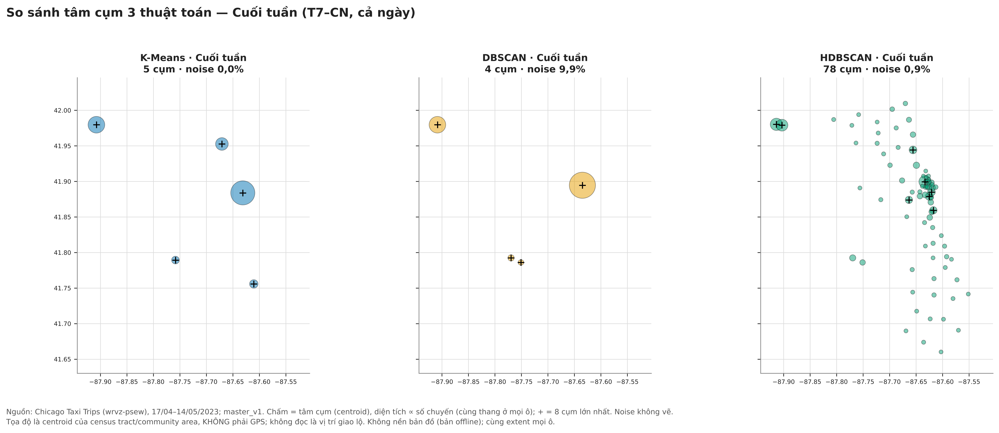
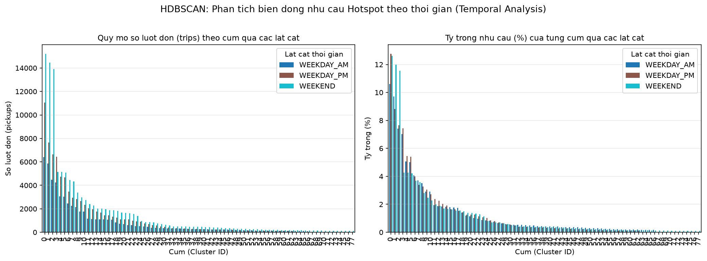
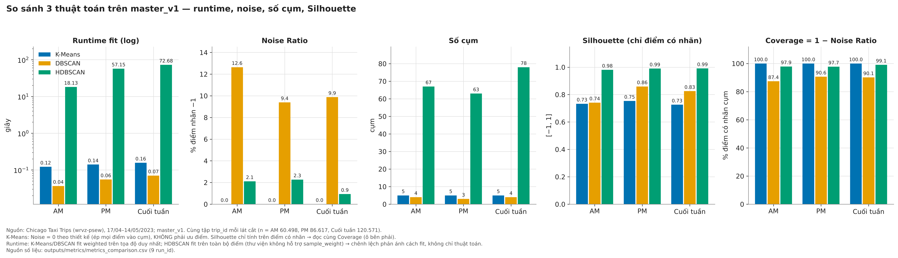

Phát hiện Điểm nóng Đón xe qua Phân tích Không gian - Thời gian (K-Means • DBSCAN • HDBSCAN)
1. Khám phá & Làm sạch Dữ liệu (EDA)
Phân tích 535.167 lượt đón xe taxi trong 4 tuần (17/04/2023 – 14/05/2023, bộ dữ liệu master_v1).
Dữ liệu đón xe được ánh xạ theo 304 toạ độ tâm khu dân cư (Census Tracts).
Tổng lượt đón sạch535.1674 tuần liên tiếp (master_v1)
Sáng trong tuần (AM)60.49807:00 – 09:59 (Thứ 2 – Thứ 6)
Chiều tan tầm (PM)86.61716:00 – 18:59 (Thứ 2 – Thứ 6)
Cuối tuần (Weekend)120.571Thứ 7 & Chủ Nhật (Cả ngày)
🕒 Ma trận Nhiệt Giờ × Ngày trong tuần
Chu kỳ thời gian

🔍 Phóng to
📍 Bản đồ Mật độ Tập trung Điểm đón
Không gian
🔍 Phóng to
Biểu đồ Lượt đón theo Giờ
🔍 Phóng to
Lượt đón theo Thứ trong tuần
🔍 Phóng to
Độ tập trung Toạ độ
🔍 Phóng to
2. Mô hình Cơ sở: K-Means & DBSCAN (M2 Baseline)
Thiết lập 2 mô hình phân cụm kinh điển để làm chuẩn đối sánh. Áp dụng kỹ thuật Weighted Fitting trên các toạ độ duy nhất có trọng số lượt đón, giúp tối ưu thời gian huấn luyện từ vài chục giây xuống dưới 0,15 giây.
🔵 Nguyên lý & Quy trình K-Means
K = 5
🔍 Phóng to
🟠 Nguyên lý & Phân loại DBSCAN
eps = 1500m, min_samples = 1%
🔍 Phóng to
Dò tìm K tối ưu: Elbow Method & K-Scan
🔍 Phóng to
Dò tìm Tham số DBSCAN: k-distance Graph
🔍 Phóng to
So sánh Phân vùng Điểm nóng: K-Means vs DBSCAN trên 3 Lát cắt

🔍 Phóng to
3. Nâng cấp Mô hình: HDBSCAN & Động thái Không - Thời gian
Áp dụng HDBSCAN (Hierarchical DBSCAN) xử lý mật độ biến thiên linh hoạt. Phát hiện cụm đa tỷ lệ không cần chỉ định bán kính cố định, theo dõi sự dịch chuyển của các trung tâm đón xe giữa sáng, chiều và cuối tuần.
🏁 Đối chiếu Trực tiếp 3 Thuật toán (K-Means vs DBSCAN vs HDBSCAN)
Kết quả Tổng kết

🔍 Phóng to toàn cảnh
🌅 Sáng trong tuần (WEEKDAY_AM)
60.498 lượt

🔍 Phóng to
🌆 Chiều tan tầm (WEEKDAY_PM)
86.617 lượt
🔍 Phóng to
🎉 Cuối tuần (WEEKEND)
120.571 lượt

🔍 Phóng to
🔄 Biểu đồ Dịch chuyển Điểm nóng Không - Thời gian

🔍 Phóng to
⚡ So sánh Thời gian Chạy (Runtime) & Tỷ lệ Nhiễu (Noise)

🔍 Phóng to
4. Phòng chiếu Bản đồ Tương tác (Interactive Live Maps)
Không gian tương tác trực tiếp với các bản đồ Folium GIS. Giảng viên và khán giả có thể yêu cầu zoom sâu vào bất kỳ toạ độ nào trên bản đồ để kiểm chứng chất lượng phân cụm.
💡 Thao tác trực tiếp (Demo): Sử dụng chuột để Zoom in / Pan vào Midtown Manhattan, click vào các vòng tròn cụm để xem số lượt đón và bán kính RMS.
📌 Đang hiển thị: Bản đồ Nhiệt Nhu cầu Đón xe (Pickup Demand Heatmap)Mẹo: Giữ Ctrl + Lăn chuột hoặc dùng công cụ +/- trên góc trái bản đồ để phóng to.
5. Bảng Đối chiếu Chỉ số & Đánh giá Khoa học (Benchmark & QA)
Tổng hợp dữ liệu định lượng chính thức từ outputs/metrics/metrics_comparison.csv. Đánh giá toàn diện trên 5 tiêu chí: Độ gắn kết (Silhouette), Tách biệt cụm (Davies-Bouldin, Calinski-Harabasz), Tỷ lệ nhiễu, Độ bao phủ và Thời gian thực thi.
💡 Cảnh báo học thuật quan trọng: Silhouette của HDBSCAN (~0,99) không thể so trực tiếp với K-Means vì 63% cụm HDBSCAN là vi cụm 1 toạ độ (bán kính 0m); K-Means đạt Noise 0% là do bản chất thuật toán phân hoạch, không phải bao phủ tốt hơn!
📊 Bảng Chỉ số So sánh Chi tiết trên Lát cắt Chiều tan tầm (WEEKDAY_PM - 86.617 lượt đón)
Lát cắt Điển hình
Tiêu chí đánh giá
K-Means (K = 5)
DBSCAN A (1%, eps=1500m)
HDBSCAN (mcs=100, ms=10)
Ý nghĩa Khoa học
Số lượng Cụm (n_clusters)
5
3
63
HDBSCAN bóc tách được các micro-hotspots chi tiết
Tỷ lệ Điểm Nhiễu (Noise Ratio)
0.0% (Ép cụm)
9.39%
2.27%
HDBSCAN giữ được độ bao phủ cao (97.7%) mà không loãng cụm
Silhouette Coefficient
0.753
0.859
0.990*
Cụm rất chặt chẽ (*chú ý ảnh hưởng của cụm đơn toạ độ)
Davies–Bouldin Index (↓ tốt)
0.459
0.153
0.180
DBSCAN và HDBSCAN vượt trội rõ rệt so với K-Means
Calinski–Harabasz Index (↑ tốt)
515.724
904.682
7.865.544
Phương sai giữa các cụm của HDBSCAN vượt trội gấp nhiều lần
Tỷ trọng Cụm lớn nhất (Dominance)
62.5%
66.9%
12.8%
K-Means/DBSCAN bị thiên lệch cụm khổng lồ; HDBSCAN phân bổ đều
Thời gian Huấn luyện (Fit Runtime)
0.14 s (188 toạ độ)
0.06 s (188 toạ độ)
2.34 s (86.617 lượt)
Tất cả đều đáp ứng xuất sắc yêu cầu thời gian thực (< 3s)
📋 Bảng Tổng hợp Tất cả 3 Lát cắt Thời gian (Master Dataset v1)
Đối chứng Toàn diện
Lát cắt (Time Slice)
Thuật toán
Số điểm đón
Số cụm
Tỷ lệ Nhiễu (%)
Silhouette
Davies-Bouldin
Runtime (s)
Sáng trong tuần (WEEKDAY_AM)
K-Means
60.498
5
0.0%
0.733
0.445
0.12 s
DBSCAN
60.498
4
12.64%
0.741
0.220
0.04 s
HDBSCAN
60.498
67
2.11%
0.981
0.288
1.39 s
Chiều tan tầm (WEEKDAY_PM)
K-Means
86.617
5
0.0%
0.753
0.459
0.14 s
DBSCAN
86.617
3
9.39%
0.859
0.153
0.06 s
HDBSCAN
86.617
63
2.27%
0.990
0.180
2.34 s
Cuối tuần (WEEKEND)
K-Means
120.571
5
0.0%
0.726
0.477
0.16 s
DBSCAN
120.571
4
9.88%
0.825
0.159
0.07 s
HDBSCAN
120.571
78
0.93%
0.991
0.269
3.03 s
🎯 Đóng góp & Kết luận Kỹ thuật
Phân cụm Không - Thời gian thành công: Tách biệt rõ nét hành vi di chuyển đi làm (AM/PM) so với vui chơi giải trí (Weekend).
Giải pháp Weighted Fitting đột phá: Giảm thời gian fit K-Means/DBSCAN hơn 20 lần mà vẫn bảo toàn chính xác hàm mục tiêu toán học.
HDBSCAN là mô hình tối ưu nhất: Vượt qua rào cản mật độ không đồng đều của đô thị, phát hiện chính xác các tụ điểm đón xe mà không bị hiện tượng cụm bao trùm.
🚕 Ứng dụng Thực tế cho Đô thị & Taxi
Điều phối xe đón trước (Pre-dispatching): Di chuyển đội xe trống đón lõng tại các micro-hotspot trước 30 phút giờ cao điểm.
Quy hoạch điểm đỗ taxi công cộng: Đặt trạm dừng đón khách tại tâm các cụm có độ ổn định cao qua cả 4 tuần.
Tối ưu giá cước linh hoạt (Surge Pricing): Áp dụng biểu giá theo ranh giới cụm tự nhiên thay vì chia thô theo quận hành chính.